Avant le vol
Préparez tout pendant que vous êtes ensemble, à la maison ou à la porte d'embarquement :
- Installez FlightChat sur chaque iPhone ou iPad du groupe.
- Une personne crée le groupe : sur le premier écran, choisissez Nouveau groupe et donnez-lui un nom.
- Les autres le rejoignent : ils scannent le code QR du groupe, ou choisissent Rejoindre un groupe et demandent à le rejoindre à proximité. Voir « Rejoindre un groupe » plus bas.
- Envoyez un message de test et vérifiez que tout le monde le reçoit.
À la première ouverture, autorisez FlightChat à trouver des appareils sur votre réseau local. Sans cela, il ne peut pas trouver votre groupe. Pour commencer sans groupe, par exemple pour écrire des notes ou jouer au Solitaire d'abord, touchez ✕ sur le premier écran ; vous pourrez créer ou rejoindre un groupe plus tard avec +.
Après la configuration de FlightChat, un court tutoriel montre l'essentiel. Pour le revoir, ouvrez Réglages et touchez Afficher le tutoriel.
FlightChat fonctionne sur iPhone et iPad, qui peuvent discuter et jouer ensemble. Sur iPad, la liste des discussions reste à côté de la discussion ouverte, et vous pouvez tourner l'iPad dans tous les sens ou utiliser FlightChat à côté d'une autre app.
Dans l'avion
- Activez le mode Avion comme d'habitude.
- Ouvrez le centre de contrôle et réactivez le Wi-Fi et le Bluetooth. Inutile de vous connecter à un réseau.
- Ouvrez FlightChat. Le haut de la liste des discussions indique qui est connecté.
Les téléphones ne se connectent que lorsque FlightChat est ouvert. Quand vous revenez dans l'app, ils se reconnectent d'eux-mêmes et récupèrent tout ce qu'ils ont manqué.
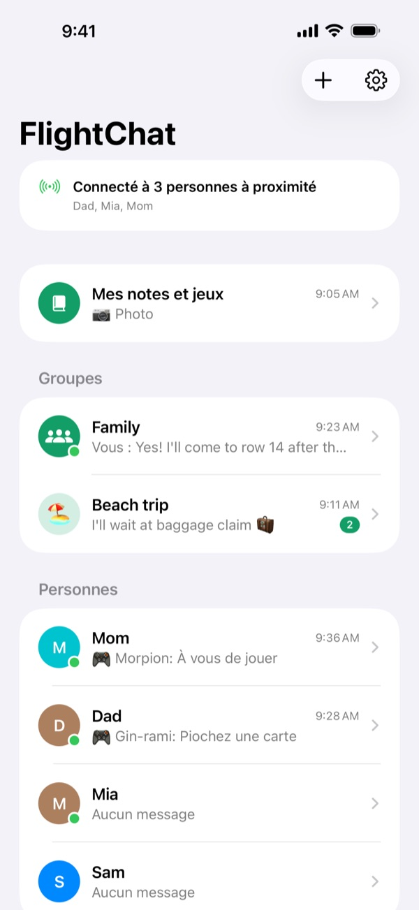
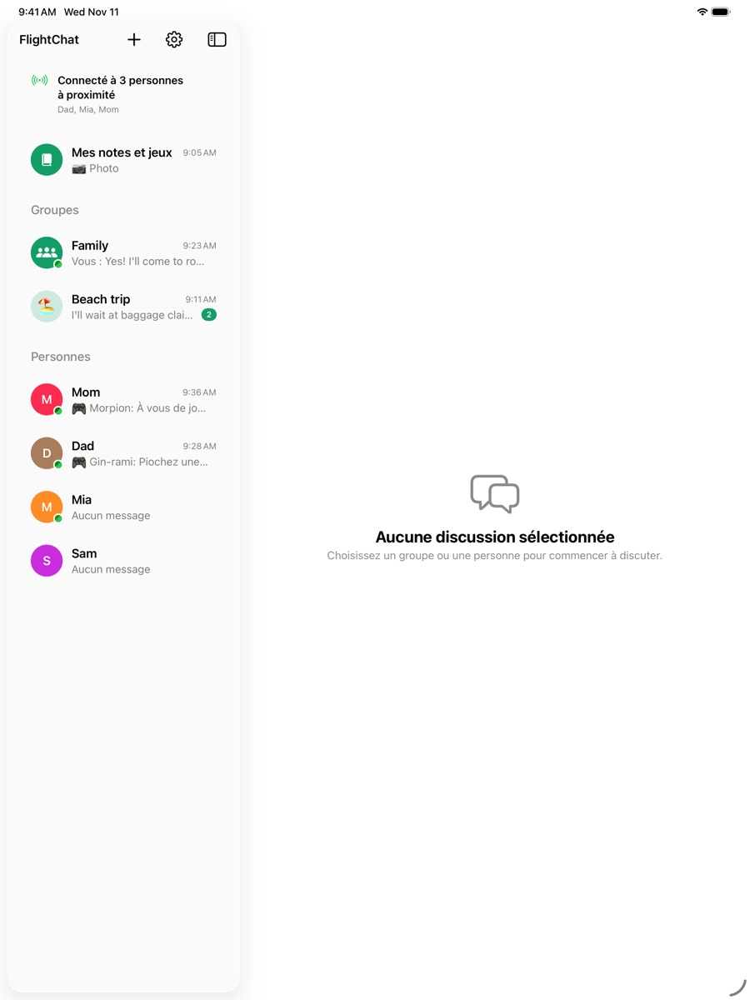
Groupes
Un groupe est une discussion commune pour les personnes qui y ont été admises. Vous pouvez être dans 10 groupes à la fois, par exemple un pour votre famille et un pour des amis sur le même vol, et rester connecté à tous.
Créer un groupe
- Dans la liste des discussions, touchez +, puis Créer.
- Donnez un nom au groupe. FlightChat génère pour lui un code difficile à deviner, pour que les autres passagers ne puissent pas y entrer par hasard.
- Touchez Créer. Invitez ensuite les autres : touchez Inviter des personnes pour leur envoyer un message avec le lien de l'App Store et le lien du groupe, afin qu'ils installent FlightChat tant qu'ils ont internet, ou montrez-leur le code QR du groupe. Les deux restent disponibles dans Infos du groupe, et la discussion du groupe vous le rappelle jusqu'à ce que quelqu'un rejoigne le groupe.
Rejoindre un groupe
Il y a trois façons de faire :
- Scannez le code QR dans Infos du groupe sur le téléphone d’un membre. Pointez l’appareil photo de l’iPhone vers le code et touchez la bannière, ou dans FlightChat touchez +, puis Rejoindre et Scanner le code QR.
- Demandez à rejoindre à proximité. La personne qui a créé le groupe ouvre Infos du groupe et touche Ajouter des personnes à proximité. Vous touchez +, puis Rejoindre, Trouver des groupes à proximité et Demander à rejoindre. Elle vérifie que les deux écrans affichent les trois mêmes emojis, puis touche Autoriser. Les deux téléphones doivent avoir FlightChat 1.2 ou une version ultérieure ; si l'un a une version plus ancienne, FlightChat l'indique, et le code QR fonctionne toujours.
- Vous avez reçu un lien ? Touchez-le pour ouvrir FlightChat, prêt à rejoindre le groupe. Vous pouvez aussi saisir le code via + → Rejoindre ; majuscules et espaces n’ont pas d’importance.
Renommer, partager ou quitter un groupe
Ouvrez la discussion du groupe, touchez ⋯, puis Infos du groupe. Vous pouvez y renommer le groupe ou lui donner une photo ou un emoji (tous ses membres les voient), afficher son code QR ou partager son code, voir ses membres ou le quitter. Si vous avez créé le groupe, Ajouter des personnes à proximité s’y trouve aussi. Quitter un groupe supprime ses messages et médias de votre téléphone.
Gardez les codes secrets. Toute personne qui a le code ou le code QR peut rejoindre le groupe et lire sa discussion. Quand quelqu’un demande à rejoindre à proximité, n’acceptez que les personnes que vous connaissez, et vérifiez que les emojis correspondent.
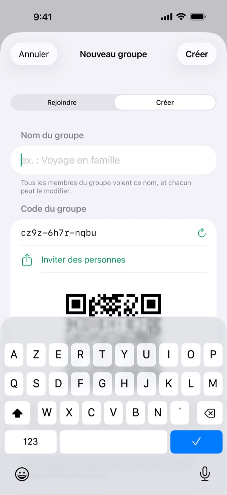
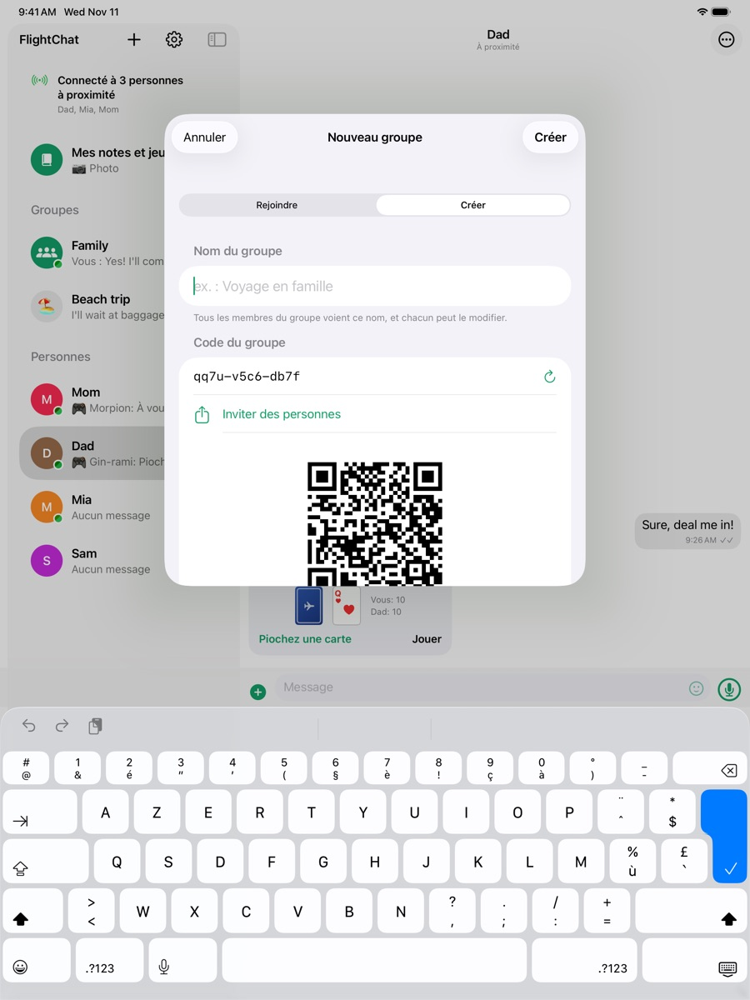
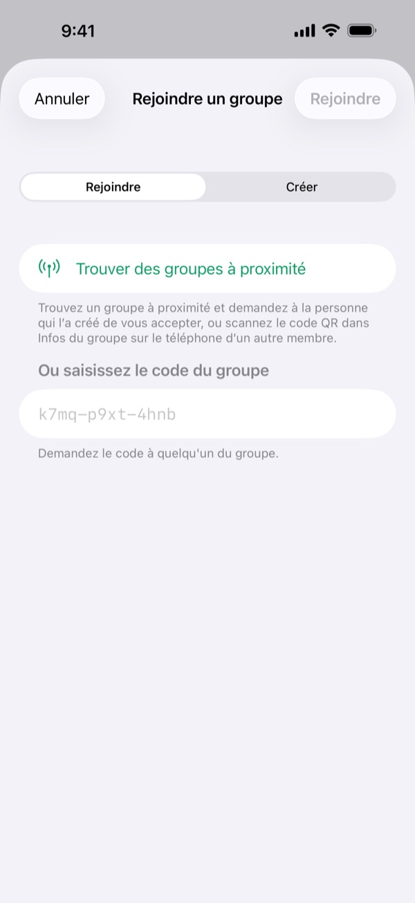
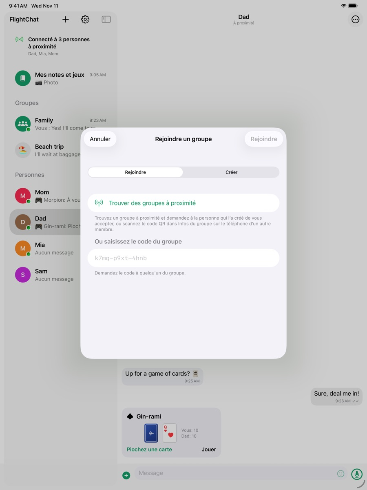
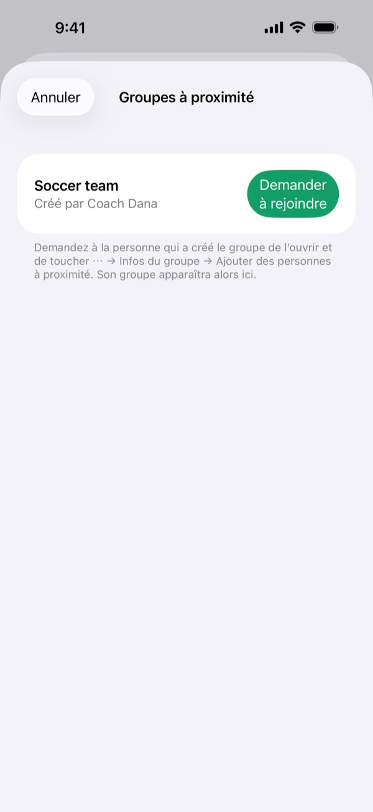
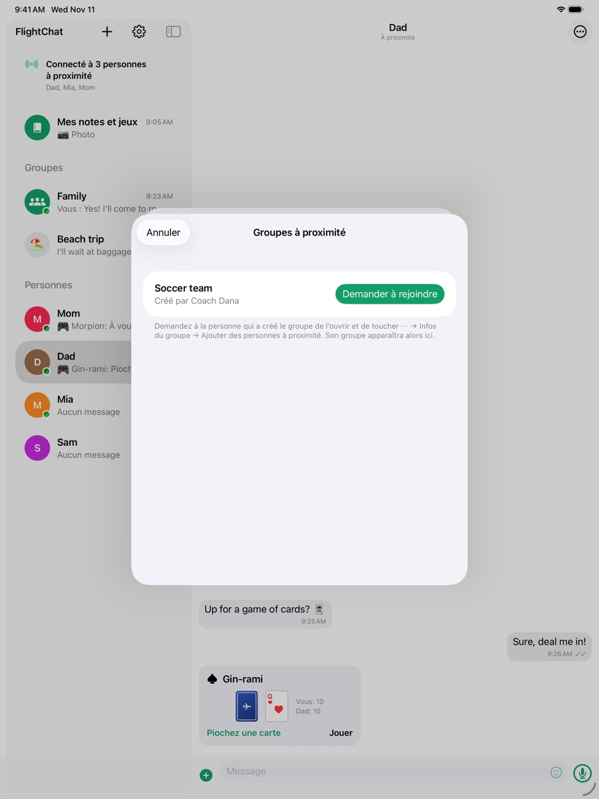
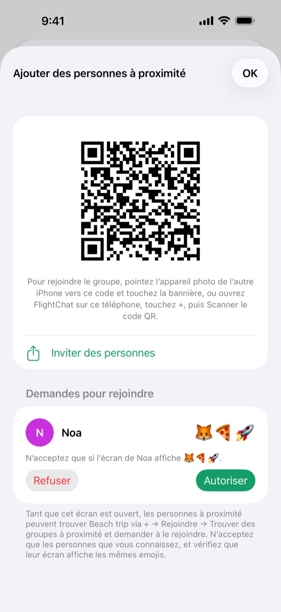
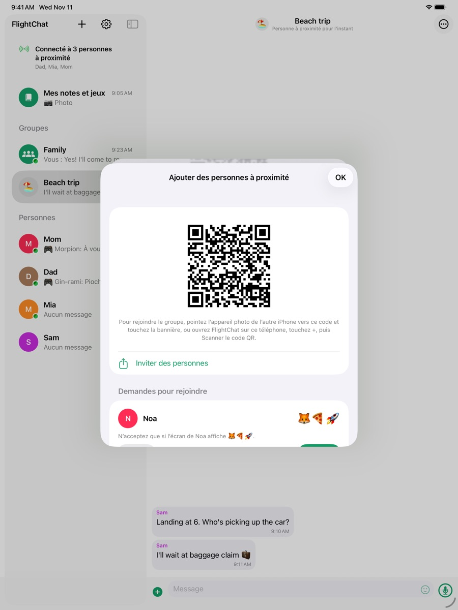
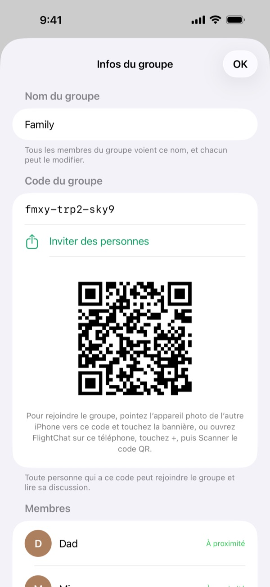
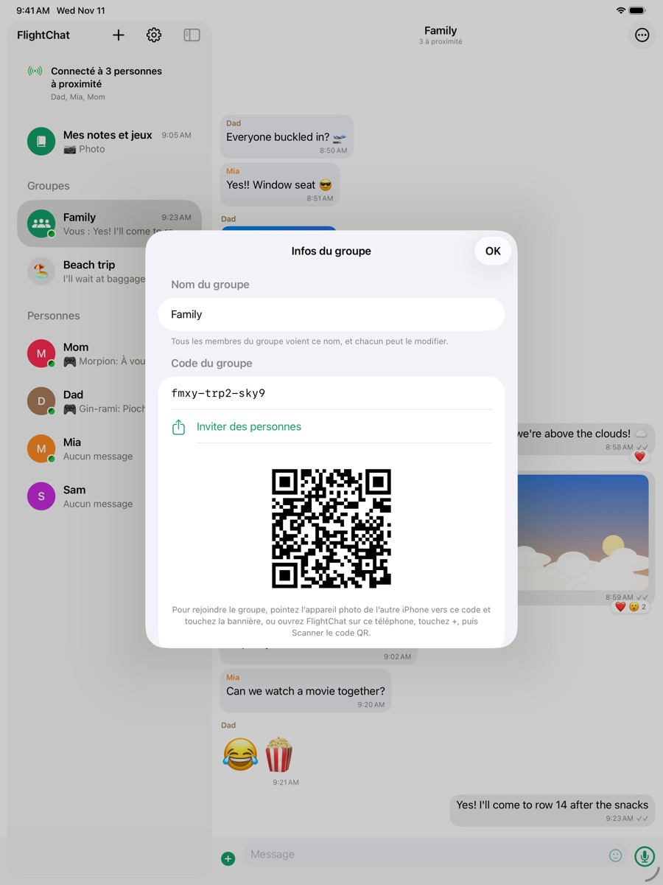
Discuter
- Discussions de groupe et individuelles : chaque groupe a sa propre discussion. Personnes liste tous ceux avec qui vous partagez un groupe ; pour écrire à une personne en privé, touchez son nom. Si deux personnes ont le même nom, leur groupe s’affiche. Les personnes avec qui vous ne partagez plus de groupe passent dans Anciennes discussions : vous pouvez toujours lire ces échanges, mais les nouveaux messages attendent que vous soyez à nouveau dans un groupe ensemble. Balayez vers la gauche pour en supprimer une.
- Photos, vidéos, GIF et fichiers : touchez + à côté du champ de message. Choisissez Prendre une photo ou une vidéo pour utiliser l'appareil photo (vidéos jusqu'à 2 minutes), ou choisissez un élément existant. Touchez le smiley pour les autocollants et les GIF. Les vidéos sont réduites avant l'envoi pour arriver bien plus vite ; l'original reste dans Photos.
- Autocollants : touchez le visage souriant dans le champ de message. Il y a quatre séries, Voyage, Famille, Émotions et Vacances ; touchez une icône en bas pour aller à l'une d'elles. Ils sont gratuits et fonctionnent sans internet.
- Réactions : maintenez le doigt sur un message, puis choisissez un emoji. Vous pouvez aussi copier le texte depuis ce menu.
- Répondre : faites glisser un message vers la droite, ou maintenez le doigt dessus et touchez Répondre. Le message auquel vous répondez s'affiche au-dessus du vôtre ; touchez-le pour y revenir. Les personnes qui ont encore une ancienne version de FlightChat reçoivent votre réponse sans lui.
- Message vocal : quand le champ de message est vide, maintenez le bouton du micro à côté et parlez, puis relâchez pour envoyer. Pour l'annuler, faites glisser le doigt vers la gauche avant de relâcher. Touchez un message vocal pour l'écouter. Un message vocal peut durer jusqu'à 2 minutes. Les personnes qui ont encore une ancienne version de FlightChat le reçoivent comme fichier audio.
- Dessiner ensemble : touchez +, puis Gribouillage. Tout le monde dans la discussion dessine sur la même page, avec des stylos et un surligneur en dix couleurs et trois tailles, des lignes droites, des rectangles, des ovales, des tampons emoji et la gomme, et voit chaque trait dès qu'il est terminé. Annuler retire votre dernier trait, et la corbeille efface tous les vôtres. Touchez la carte du gribouillage pour le rouvrir plus tard, même après avoir été hors de portée. Une fois fini, touchez OK : le dessin est envoyé dans la discussion comme image (les personnes ayant une version plus ancienne de FlightChat ne reçoivent que l'image). Utilisez ⋯ pour l'enregistrer. La personne qui a commencé un gribouillage peut le supprimer depuis ce menu, ou en touchant longuement sa carte, tant qu'il n'est pas terminé ; il est supprimé pour tout le monde. Dans Mes notes et jeux, vous dessinez seul, et OK le termine simplement.
- Mes notes et jeux : dans la liste des discussions, au-dessus de vos groupes, se trouve un journal que vous seul pouvez voir. Écrivez des notes, ajoutez des photos, des autocollants ou des messages vocaux ; ils restent sur cet appareil et ne sont jamais envoyés. Les notes de chaque jour sont sous sa date. Maintenez le doigt sur une note pour la modifier ou la supprimer. Il est toujours là, même avant de rejoindre un groupe. Les jeux auxquels vous jouez ici, comme le solitaire, s'affichent en haut tant qu'ils sont en cours ; touchez-en un pour continuer, ou son ✕ pour l'arrêter. Dans un jeu, ⋯ → Records affiche vos victoires, meilleurs temps et parties récentes, et permet de les réinitialiser.
- Thèmes de discussion (Pro) : dans une discussion, touchez ⋯, puis Thème de la discussion, et choisissez Classique, Océan, Coucher de soleil, Forêt, Ciel étoilé ou Bonbon. Chaque discussion garde le sien, seulement sur cet appareil : chacun voit la discussion avec son propre thème.
- Plein écran : touchez une photo ou une vidéo. Tournez le téléphone pour l'agrandir. Utilisez le bouton de partage pour l'enregistrer.
- Coches : ✓ signifie que le message est enregistré et envoyé aux personnes connectées. ✓✓ signifie que tous ses destinataires l'ont reçu.
- Pas à proximité ? Les messages aux personnes non connectées partent dès la reconnexion.
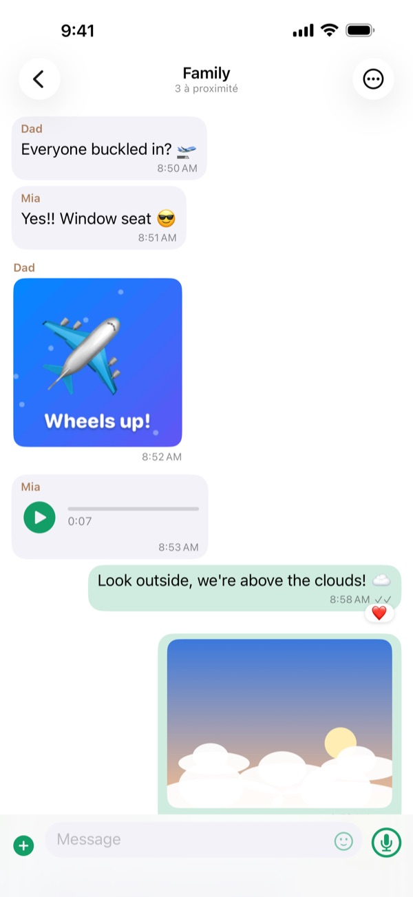
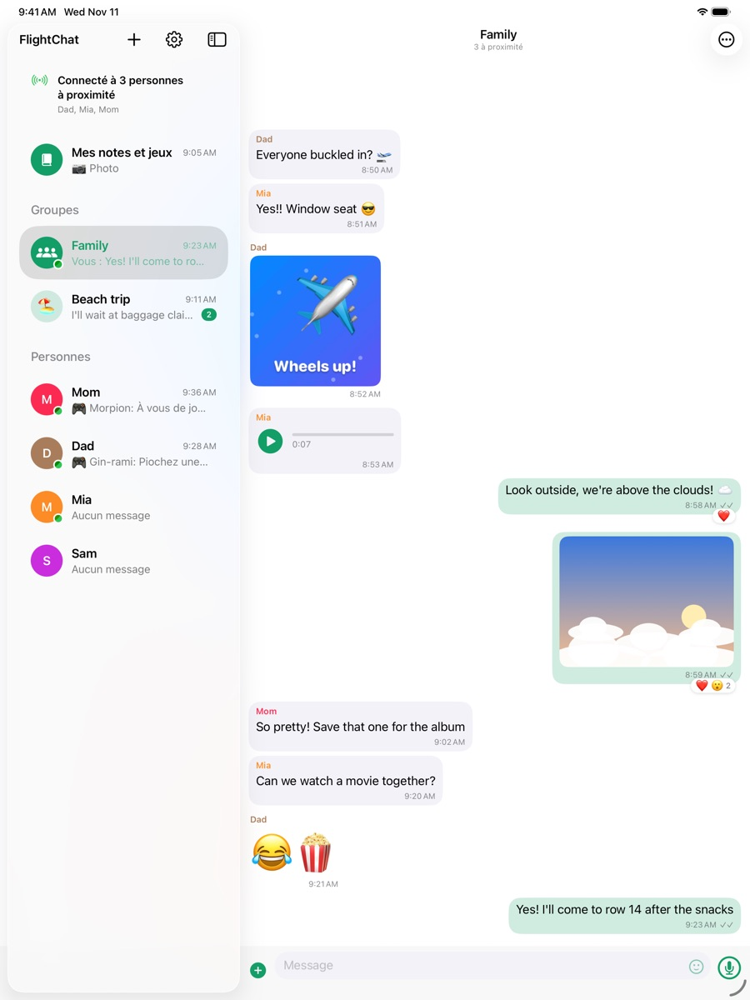
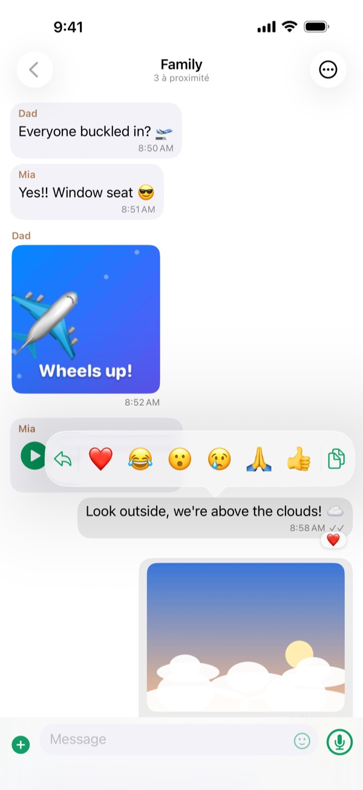
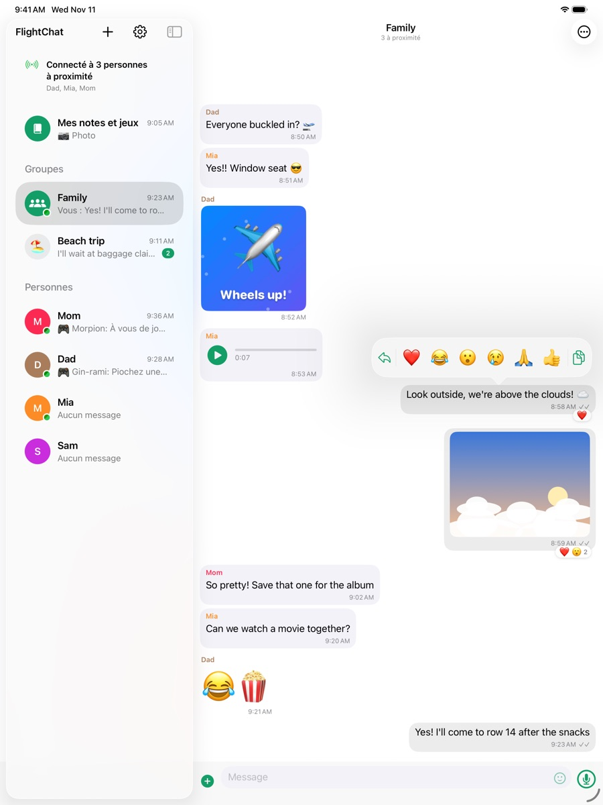
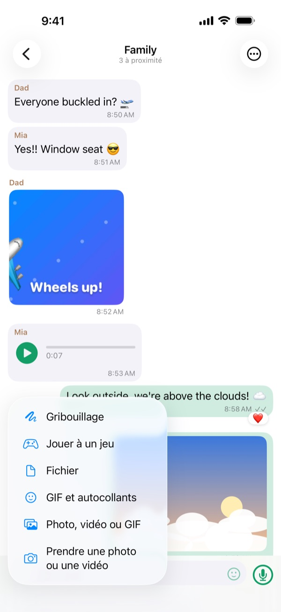
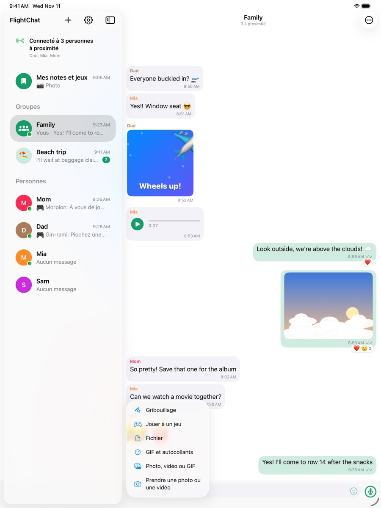
Jeux
Faites une partie rapide avec quelqu'un dans une discussion individuelle : touchez +, puis Jouer à un jeu, et choisissez. Une carte de jeu apparaît dans la discussion pour vous deux ; touchez-la pour jouer. À la fin, touchez Revanche pour rejouer, l'autre personne commençant. Si une partie de ce jeu est déjà en cours dans la discussion, le choisir à nouveau ouvre cette partie.
- Morpion : placez ✕ et ◯ à tour de rôle. Trois alignés gagnent.
- Quatre en ligne : lâchez des jetons dans une colonne à tour de rôle. Quatre alignés, horizontalement, verticalement ou en diagonale, gagnent.
- Pierre-feuille-ciseaux : vous choisissez tous les deux en même temps. Aucun téléphone ne voit le choix de l'autre avant que vous ayez choisi tous les deux.
- Dames : déplacez-vous en diagonale et prenez en sautant. Les dames volent sur toute la diagonale.
- Backgammon : ramenez vos 15 pions chez vous et sortez-les. Les dés sont lancés pour vous.
- Mines (Pro) : un jeu en solo dans Mes notes et jeux. Ouvrez toutes les cases qui ne cachent pas de mine ; chaque nombre indique combien de mines la touchent. Choisissez Facile, Moyen ou Difficile. Votre premier toucher est toujours sans danger, et vos victoires et meilleurs temps restent sur cet appareil.
Les parties ne sont envoyées qu'à l'autre joueur. Si l'un de vous s'éloigne, la partie attend et reprend dès que vos téléphones se reconnectent.
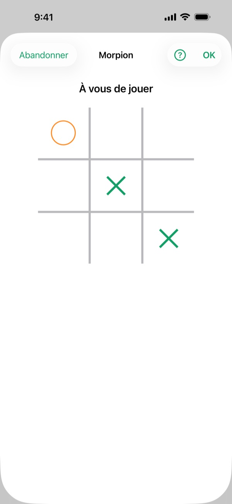
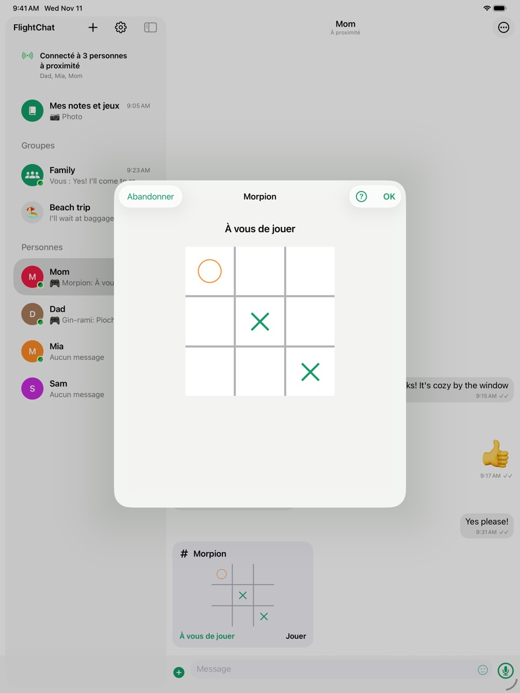
Jeux de cartes
Les jeux de cartes se lancent de la même façon : +, puis Jouer à un jeu. Le paquet est mélangé au début de la partie et chacun ne voit que sa propre main, en bas de l'écran. Touchez la pioche pour piocher et touchez une carte pour la jouer ; les cartes jouables sont surélevées.
- Bataille : chacun retourne sa carte du dessus et la plus forte remporte les deux (l'as est la plus forte). En cas d'égalité, le gagnant de la manche suivante les remporte aussi. Après 26 manches, celui qui a gagné le plus de cartes l'emporte.
- Huit américain : sept cartes chacun. Jouez une carte de la même couleur ou de la même valeur que celle du talon, ou piochez. Les huit se posent sur n'importe quoi et vous laissent choisir la couleur suivante. Le premier à se débarrasser de toutes ses cartes gagne.
- Gin-rami : dix cartes chacun. À votre tour, piochez dans la pioche ou la défausse, puis défaussez une carte. Formez des combinaisons : trois ou quatre cartes de même valeur, ou au moins trois cartes qui se suivent dans une même couleur. Avec 10 points ou moins de cartes restantes, vous pouvez frapper pour finir la donne ; sans aucune, c'est gin.
- Solitaire : un jeu pour une personne, donc personne n'a besoin d'être à proximité. Dans Mes notes et jeux, touchez +, puis Jouer à un jeu et Solitaire, et choisissez Facile (retourner une carte à la fois) ou Difficile (trois). Vos victoires et meilleurs temps restent sur cet appareil.
- FreeCell (Pro) : un autre jeu en solo dans Mes notes et jeux. Toutes les cartes sont distribuées face visible, donc presque chaque partie peut être gagnée avec un peu de réflexion. Touchez une carte pour la placer où elle va ; les cartes qui peuvent monter sans risque sur les fondations y vont seules. Vos victoires et meilleurs temps restent sur cet appareil.
- Dame de pique (discussions de groupe, 3 ou 4 joueurs) : passez trois cartes, puis évitez de ramasser des cœurs ou la dame de pique dans vos plis. Quand quelqu'un atteint 100 points, le score le plus bas gagne.
- Jeux de groupe à 3 ou 4 : dans une discussion de groupe, touchez +, puis Jouer à un jeu, et choisissez Huit américain ou Gin-rami. Choisissez 2 ou 3 personnes (celles à proximité sont déjà cochées) et touchez Distribuer. On joue chacun son tour. Au Huit américain, chacun reçoit 5 cartes ; au gin-rami, 10 chacun à trois et 7 chacun à quatre, et quand quelqu'un frappe, tous les autres posent leurs cartes et comptent. Tout le groupe voit la partie, mais seuls les joueurs reçoivent des cartes, et personne ne voit la main des autres.
Votre main ne s'affiche que sur votre téléphone ; l'autre joueur voit combien de cartes vous avez, pas lesquelles. À la fin d'une partie de gin-rami, les deux mains sont montrées pour vérifier le score.
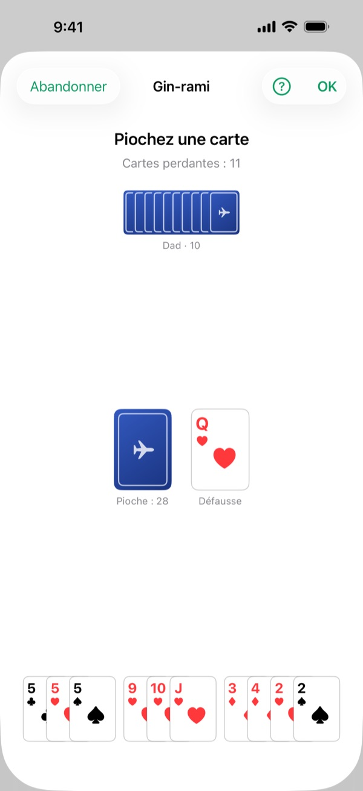
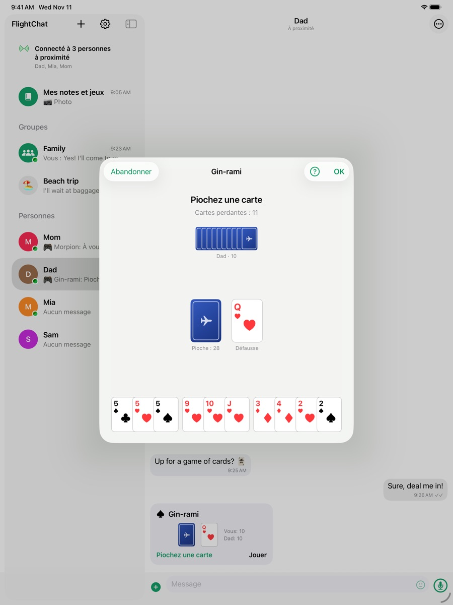
FlightChat Pro
FlightChat est gratuit, avec les discussions, les photos, les autocollants et la plupart des jeux. FlightChat Pro est un achat unique qui permet de lancer la dame de pique, le backgammon, le huit américain et le gin-rami, et de jouer seul à FreeCell et aux Mines. Dans la liste des jeux, ils affichent Pro tant que vous ne l'avez pas. Il débloque aussi les thèmes de discussion.
Seule la personne qui lance une partie Pro a besoin de Pro. Vos amis qui ne l'ont pas peuvent rejoindre et jouer les parties que vous lancez, à deux ou en groupe.
Achetez-le dans Réglages → FlightChat Pro, ou en touchant un jeu Pro. C'est un paiement unique, sans abonnement, partagé avec votre famille via le partage familial. L'achat nécessite Internet : achetez-le avant le vol ; ensuite, Pro fonctionne hors ligne. Sur un nouvel iPhone, touchez Restaurer les achats.
Règles des jeux
Les règles de chaque jeu de FlightChat. Dans une partie, touchez Comment jouer pour aller directement à ses règles.
Morpion
- Deux joueurs jouent à tour de rôle sur une grille de 3 × 3. Celui qui commence a les ✕ ; l'autre, les ◯.
- À votre tour, touchez une case vide pour y placer votre symbole.
- Alignez trois de vos symboles, horizontalement, verticalement ou en diagonale, pour gagner. Si la grille est pleine avant, c'est un match nul.
Quatre en ligne
- Deux joueurs lâchent à tour de rôle des jetons dans une grille de 7 colonnes et 6 rangées. Celui qui commence a les rouges ; l'autre, les jaunes.
- À votre tour, touchez une colonne : votre jeton tombe dans la case libre la plus basse. Une colonne pleine n'accepte plus de jetons.
- Alignez quatre de vos jetons, horizontalement, verticalement ou en diagonale, pour gagner. Si la grille est pleine avant, c'est un match nul.
Pierre-feuille-ciseaux
- Les deux joueurs choisissent pierre, feuille ou ciseaux en même temps.
- La pierre bat les ciseaux, les ciseaux battent la feuille et la feuille bat la pierre. Le même choix des deux côtés donne un match nul.
- Votre choix reste scellé jusqu'à ce que l'autre joueur ait choisi aussi : aucun de vous ne peut voir le choix de l'autre en premier.
Dames
- Chaque joueur a 12 pions sur les cases foncées d'un damier de 8 × 8, ses propres pions en bas. Celui qui commence a les pions clairs.
- Les pions avancent d'une case en diagonale. Un pion prend en sautant par-dessus un pion adverse voisin vers la case libre juste derrière, vers l'avant ou vers l'arrière.
- La prise est obligatoire. Si le même pion peut encore prendre après avoir atterri, il continue dans le même tour : touchez chaque case d'arrivée à la suite.
- Un pion qui atteint la dernière rangée devient une dame (♛). Les dames se déplacent d'autant de cases qu'elles veulent en diagonale et prennent une pièce à n'importe quelle distance, en atterrissant sur n'importe quelle case libre derrière elle.
- Vous gagnez quand l'adversaire n'a plus de pièces ou ne peut plus bouger. Si seules les dames bougent pendant 30 coups chacun sans aucune prise, c'est un match nul.
Backgammon
- Chaque joueur a 15 pions qu'il fait tourner autour du plateau jusqu'à son jan intérieur, en bas à droite, puis qu'il sort. Le premier à sortir ses 15 pions gagne.
- À chaque tour, deux dés sont lancés pour vous. Déplacez un pion par dé, ou un seul pion des deux valeurs. Un double se joue quatre fois. Vous devez utiliser les deux dés si possible ; si un seul peut être joué, ce doit être le plus fort quand c'est possible.
- Vous ne pouvez pas vous poser sur une flèche occupée par deux pions adverses ou plus. Se poser sur un pion seul le frappe : il va sur la barre et doit rentrer avant que son propriétaire puisse jouer un autre pion.
- Quand tous vos pions sont dans votre jan intérieur, vous pouvez les sortir avec le nombre exact, ou avec un dé plus fort depuis votre flèche la plus haute.
- Touchez un pion, puis sa destination, une fois par dé. Annuler revient d'un pas et Fin du tour termine votre tour. Si vous ne pouvez pas bouger, touchez Passer.
- Gagner avant que l'adversaire ait sorti un seul pion est un gammon ; s'il a encore un pion sur la barre ou dans votre jan intérieur, c'est un backgammon. Il n'y a pas de videau.
Bataille
- Le paquet est mélangé et partagé en deux : 26 cartes chacun, face cachée.
- À chaque manche, les deux joueurs retournent leur carte du dessus, et la plus forte remporte les deux. L'as est la plus forte, puis le roi, la dame, le valet, et du 10 au 2.
- Si les deux cartes ont la même valeur, elles restent au milieu et le gagnant de la manche suivante les remporte aussi.
- Après 26 manches, celui qui a gagné le plus de cartes remporte la partie.
Huit américain
- À deux, chacun reçoit 7 cartes ; à trois ou quatre (dans une discussion de groupe), 5 chacun. Une carte est retournée pour commencer le talon, et le reste forme la pioche.
- À votre tour, jouez une carte de la même couleur ou de la même valeur que celle du talon, ou piochez. Vous pouvez piocher autant de cartes que vous voulez avant de jouer.
- Les huit sont des jokers : posez-en un sur n'importe quelle carte, puis choisissez la couleur que le joueur suivant doit jouer.
- Si vous ne pouvez pas jouer et que la pioche est vide, touchez Passer.
- Le premier à se débarrasser de toutes ses cartes gagne. Si plus personne ne peut jouer, le plus petit total en main gagne : les huit valent 50, les figures 10, les as 1, les autres leur valeur.
Gin-rami
- Chacun reçoit 10 cartes (7 chacun quand on joue à quatre dans une discussion de groupe). Une carte commence la défausse, et le reste forme la pioche.
- À votre tour, prenez la carte du dessus de la pioche ou de la défausse, puis défaussez une carte. Vous ne pouvez pas rejeter la carte que vous venez de prendre dans la défausse.
- Formez des combinaisons : trois ou quatre cartes de même valeur (7♣ 7♥ 7♠), ou au moins trois cartes qui se suivent dans une même couleur (4♥ 5♥ 6♥). L'as est la plus petite carte. FlightChat regroupe vos combinaisons pour vous.
- Les cartes hors combinaison sont des cartes perdantes : l'as vaut 1, les cartes numérotées leur valeur, les figures 10. Votre total s'affiche sous Cartes perdantes.
- Quand vos cartes perdantes valent 10 ou moins après la défausse, vous pouvez frapper pour finir la donne ; si vous n'en avez aucune, c'est gin. Les autres joueurs ajoutent alors les cartes qu'ils peuvent aux combinaisons de celui qui a frappé (pas après un gin).
- Score : celui qui frappe gagne la différence de cartes perdantes avec chaque autre joueur. Un gin rapporte les cartes perdantes de tous plus 25. Un joueur qui en a autant ou moins que celui qui a frappé le contre et gagne la différence plus 25. S'il ne reste que 2 cartes dans la pioche, la donne est nulle.
Dame de pique
- Pour 3 ou 4 joueurs dans une discussion de groupe. À quatre, chacun reçoit 13 cartes ; à trois, le 2♦ est retiré et chacun en reçoit 17. Chaque manche est un nouveau mélange.
- Avant chaque manche, chacun passe trois cartes : à gauche, puis à droite, puis en face (pas à trois joueurs), puis aucun passage, et on recommence. Chacun choisit ses cartes à son tour.
- Celui qui a le 2♣ l'entame au premier pli. Fournissez la couleur si vous le pouvez ; sinon, jouez n'importe quelle carte, mais pas de cœur ni la D♠ au premier pli sauf si vous n'avez rien d'autre. La plus haute carte de la couleur demandée remporte le pli et entame le suivant.
- Vous ne pouvez pas entamer à cœur tant qu'aucun cœur n'a été joué dans un pli précédent, sauf s'il ne vous reste que des cœurs.
- Chaque cœur ramassé vaut 1 point, et la D♠ en vaut 13. Si vous ramassez les 26 points d'une manche, vous faites le grand chelem : vous marquez 0 et tous les autres 26.
- Quand quelqu'un atteint 100 points, le score le plus bas gagne. En cas d'égalité pour le plus bas, on joue une autre manche. À votre tour, vous pouvez toucher Quitter la partie : la partie se termine pour tout le monde, et le score le plus bas parmi les autres gagne.
Solitaire
- Sept piles sont distribuées : une carte dans la première, deux dans la suivante, jusqu'à sept, avec seulement la carte du dessus de chacune face visible. Le reste du paquet forme la pioche.
- Le but est de monter toutes les cartes sur les quatre emplacements du haut, un par couleur, dans l'ordre de l'as au roi.
- Sur les piles, une carte se pose sur une carte d'un rang au-dessus et de l'autre couleur : un 6 rouge sur un 7 noir. Vous pouvez déplacer une carte avec celles posées dessus. Seul un roi va sur une pile vide. Déplacer la dernière carte visible d'une pile retourne celle du dessous.
- Touchez la pioche pour retourner des cartes : une à la fois en Facile, trois en Difficile, où seule celle du dessus peut être jouée. Quand elle est vide, touchez-la pour remettre les cartes et les parcourir à nouveau.
- Touchez une carte pour la déplacer là où elle va, d'abord à l'emplacement de sa couleur en haut. Annuler reprend un coup. Quand toutes les cartes sont visibles, Terminer joue le reste pour vous.
FreeCell
- Les 52 cartes sont distribuées face visible en huit colonnes. Au-dessus se trouvent quatre cases libres et quatre fondations, une par couleur.
- Montez chaque fondation par couleur, de l'as au roi. Vous gagnez quand les 52 cartes sont sur les fondations.
- Dans les colonnes, posez une carte sur une carte d'un rang supérieur et de l'autre couleur (un 8 rouge sur un 9 noir). N'importe quelle carte peut aller dans une colonne vide, et chaque case libre contient une carte.
- Seule la carte du dessus d'une colonne se déplace, mais une suite ordonnée (un rang de moins à chaque fois, couleurs alternées) se déplace d'un bloc s'il y a de la place : une carte de plus par case libre vide, et deux fois plus par colonne vide.
- Touchez une carte pour la déplacer : sur sa fondation si possible, sinon sur une colonne, puis une colonne vide, puis une case libre. Les cartes dont plus personne n'a besoin montent seules. Annuler reprend un coup, et Terminer joue la fin d'une partie déjà gagnée. Terminer la partie dans le menu ⋯ arrête une partie sans en commencer une autre ; elle compte comme abandonnée.
Mines
- Les mines sont cachées sous les cases : Facile fait 9 × 9 avec 10 mines, Moyen 10 × 14 avec 25, Difficile 12 × 20 avec 50. Chaque partie est une nouvelle grille.
- Touchez une case pour l'ouvrir. Votre premier toucher n'est jamais une mine et ouvre toujours une zone. Un nombre indique combien des huit cases voisines sont des mines ; une case vide ouvre seule les cases autour d'elle.
- Touchez longuement une case pour mettre un drapeau sur une mine trouvée (ou passez le bouton sous la grille sur Drapeau). Touchez un nombre ouvert dont toutes les mines ont un drapeau pour ouvrir le reste autour.
- Ouvrez toutes les cases sans mine pour gagner ; ouvrez une mine et la partie est finie. Le chronomètre démarre à votre premier toucher. Terminer la partie, dans le menu ⋯, arrête une partie ; elle compte comme abandonnée.
Exporter une discussion
Ouvrez la discussion, touchez ⋯, puis Exporter la discussion. FlightChat crée un fichier ZIP avec la conversation en texte et les photos, vidéos et fichiers présents sur votre téléphone. Enregistrez-le dans Fichiers, envoyez-le par AirDrop ou par e-mail une fois de nouveau en ligne. Une partie apparaît sur une ligne indiquant comment elle s'est terminée, et un gribouillage sous forme d'image.
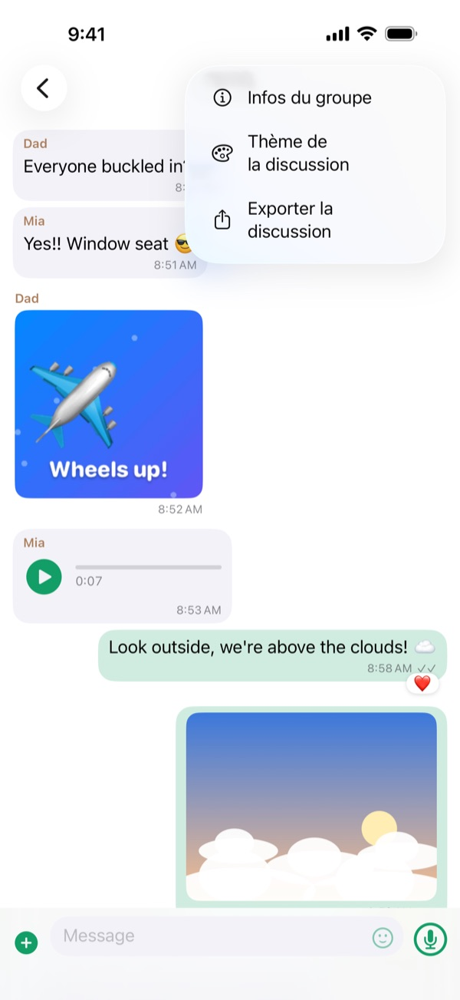
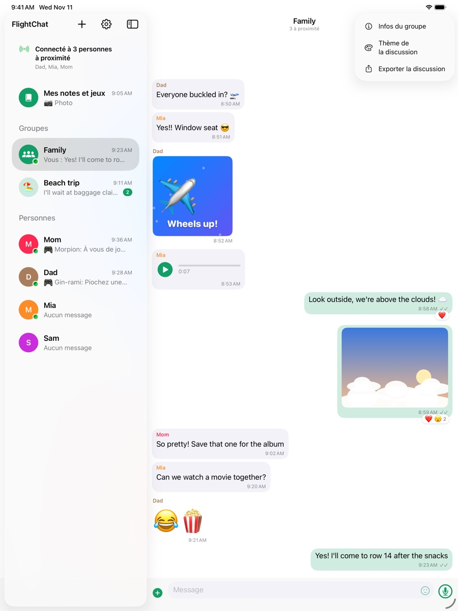
Bloquer et signaler
- Dans une discussion individuelle : touchez ⋯, puis Bloquer ou signaler.
- Dans une discussion de groupe : maintenez le doigt sur son message, puis touchez la main.
- Vous ne voyez plus ses messages et cette personne ne peut plus vous écrire. Elle n'en est pas informée.
- Signaler et bloquer nous envoie aussi un signalement par e-mail. Nous répondons sous 24 heures.
- Débloquez des personnes dans Réglages → Personnes bloquées.
Une personne bloquée qui a le code du groupe peut toujours lire la discussion du groupe. Pour l’exclure complètement, créez un nouveau groupe, faites-y entrer tous les autres et quittez l’ancien.
Si vous ne vous sentez pas en sécurité à bord, prévenez immédiatement un membre de l'équipage.
Si les téléphones ne se connectent pas
- Vérifiez que le Wi-Fi et le Bluetooth sont activés dans le centre de contrôle. Le mode Avion les désactive.
- Gardez FlightChat ouvert sur les deux téléphones.
- Vérifiez que vous êtes dans le même groupe : ouvrez la discussion du groupe, touchez ⋯, puis Infos du groupe, et comparez les codes.
- Dans l'app Réglages de l'iPhone, ouvrez FlightChat et vérifiez que Réseau local est activé.
- Rapprochez-vous. Des téléphones à quelques rangées d'écart se connectent généralement ; à l'autre bout d'un grand avion, ce n'est pas toujours le cas.
- Vous venez de rejoindre un groupe ? Les téléphones qui y sont déjà vous trouvent en quelques secondes.
- Jusqu'à 8 téléphones peuvent être connectés entre eux en même temps, le vôtre compris.
Langues
FlightChat utilise la langue de votre iPhone : anglais, français, espagnol, chinois, japonais, hébreu, coréen ou arabe. L'hébreu et l'arabe se lisent de droite à gauche. Les messages, les noms et les autocollants s'affichent toujours tels qu'ils ont été envoyés. Pour choisir une langue rien que pour FlightChat, touchez la roue dentée dans la liste des discussions, choisissez une Langue, touchez Enregistrer, puis fermez et rouvrez FlightChat. Vous pouvez aussi la choisir dans l'app Réglages de l'iPhone, sous Apps → FlightChat → Langue.
Vos données
Vos messages restent sur votre téléphone et sur ceux de vos groupes. Il n'y a ni compte ni serveur. Pour tout supprimer, ouvrez Réglages et touchez Effacer l'historique. Pour en savoir plus, consultez la Politique de confidentialité et les Conditions d'utilisation (en anglais).
Contact
Un problème ou une question ? Écrivez à biomass-65-jumbo@icloud.com.